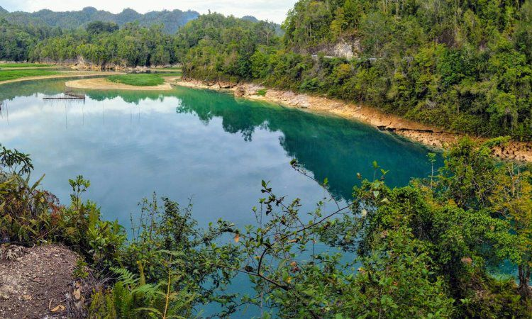

Danau Uter ini merupakan tempat favorit bagi wisatawan. Selain airnya jernih, Anda bisa bercermin di permukaan air danau ini. Anda bisa mandi dan berendam di danau yang dikelilingi pepohonan hijau ini. Warga sekitar belum mengelola baik tempat ini namun fasilitas berupa tempat parkir sudah disediakan di tempat ini. Sehingga tempat ini masih kurang pengunjung, jika Anda datang Anda akan merasakan seperti memiliki danau ini seorang diri.
Bukan hanya bisa menikmati keindahan bahari di Papua Barat, namun para wisatawan juga bisa menikmati bagaimana keindahan Danau Framu yang bertempatkan di daerah Sorong. Danau ini memang sangat terkenal dengan airnya sangat jernih, para pengunjung bisa melihat dengan jelas bagaimana keadaan di danau tersebut. Danau cantik yang seperti ini mempunyai kedalaman yang mencapai 30 meter. Untuk bisa mencapai Danau ini, para pengunjung diharuskan berjalan kaki terlebih dahulu menyusuri hutan kecil yang kurang lebih sekitar 15 menit.
Pegunungan ini memang memiliki udara yang cukup asri dengan hamparan hijau perbukitan. Tempat wisatawan bisa mengunjungi dua danau yang ada di pegunungan ini, yaitu Danau Anggi Giji dan juga Danau Anggi Gida. Area pegunungan ini menjadi lokasi pengamatan kupu-kupu dan juga burung yang bertempatkan di bagian Distrik Mokwan.
Dalam kawasan Raja Ampat, terdapat pulau yang bernama Waigeo yang menjadi pulau paling besar. Pulau yang satu ini merupakan tempat konservasi hewan liar dan merupakan rumah bagi banyak satwa. Apabila datang ke tempat ini para pengunjung bisa melihat satwa seperti cendrawasih bahkan sampai Maleo Waigeo. di Pulau ini Anda juga bisa melihat bagaimana keindahan alam yang ada di bawah laut.
Kegiatan snorkeling dapat Anda lakukan ketika berkunjung ke wisata Pulau dua. Apalagi di sana juga menjadi tempat jejak dari Kristen yang ada di Papua. Karena menjadi wisata yang menawarkan keindahan alam serta sejarah, wisata ini akan sangat sayang jika dilewatkan.
Bisa dikatakan jika wisata Air Terjun ini yang paling populer di Papua Barat, karena air terjun ini secara langsung bermuara pada laut yang memiliki pemandangan pegunungan. Dengan warna laut yang hijau yang di perankan dengan kondisi hutan yang cukup asri, sehingga sangat cocok menjadi tempat untuk melepas penat.